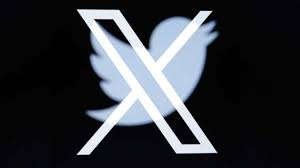

Mi twitter
Que es twitter, bueno ahora X
Una cosa queda clara: Elon Musk no vino a jugar y no tiene miedo a introducir nuevos cambios. Comenzó con la fijación de la “cuota límite”, que limitaba el número de los tweets que los usuarios pueden leer al día. Ahora fue a por todas con el nuevo logo y nombre de la red social que cabe en una letra: X.

Continuara.....
Regresar al menu